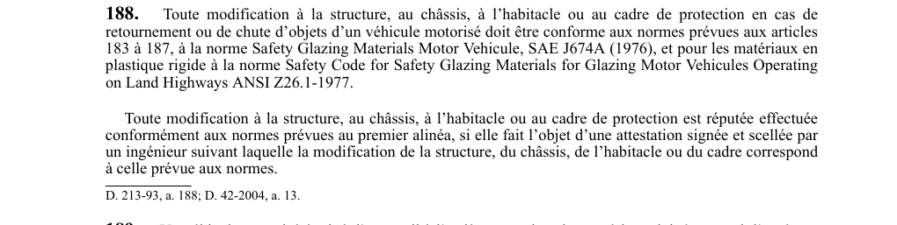

art-188-RSSM : modifications structure cadre protection normes
Un article du wiki ⚖️ Recueil législatif
🌐 LegisQuébec · 📄 PDF officiel
Texte officiel : capture du PDF

🔗 Voir art. 188 RSSM dans le PDF (page 59)
Version : texte officiel du RSSM (RLRQ c. S-2.1, r. 14), à jour au 1er mai 2024 — Éditeur officiel du Québec
En bref
Toute modification à la structure, au châssis, à l'habitacle. Cette obligation vise l'employeur.
- À la norme SAE J674A (1976) et, pour les plastiques rigides.
- Une attestation signée.
- Attestation d'ingénieur requise pour réputée conforme.
Voir aussi
- art. 186 : protection chutes d'objets en voie · obligation : tous les véhicules motorisés conçus à l'origine pour supporter un cadre de protection et utilisés sous terre pour l'exploitation d'un gisement dont les voies de circulation sont conformes au deuxième alinéa de l'article 42 doivent être protégés contre les chutes d'objets par un.
- art. 187 : habitacle de protection conforme · obligation : l'habitacle des véhicules motorisés visés aux articles 184 et 185 doit être conforme à la norme Volume limite de déformation : Évaluation en laboratoire des structures de protection contre le retournement (SPR) et contre les chutes d'objets (SPCO), SAE J397-APR88.
- art. 189 : écran protecteur véhicule treuil arrière · obligation : un véhicule motorisé équipé d'un treuil à l'arrière pour tirer des matériaux doit être muni d'un écran protecteur conforme à la norme SAE J1084-APR80, portant une plaque fixée de façon permanente indiquant le nom et l'adresse du fabricant et la norme applicable.
- art. 190 : ceinture sécurité conducteur cadre retournement · obligation : le conducteur d'un véhicule motorisé muni d'un cadre de protection contre le retournement doit porter une ceinture de sécurité conforme à l'annexe A de la norme ACNOR B352-M1980.
- ⚖️ Loi habilitante : LSST
- ↑ Index du bloc : Sautage et explosifs
Pages qui pointent ici (5)
- art-186-RSSM, protection chutes d'objets en voie Recueil législatif
- art-187-RSSM, habitacle de protection conforme Recueil législatif
- art-189-RSSM, écran protecteur véhicule treuil arrière Recueil législatif
- art-190-RSSM, ceinture sécurité conducteur cadre retournement Recueil législatif
- RSSM - Sautage et explosifs (art. 161-200) Recueil législatif